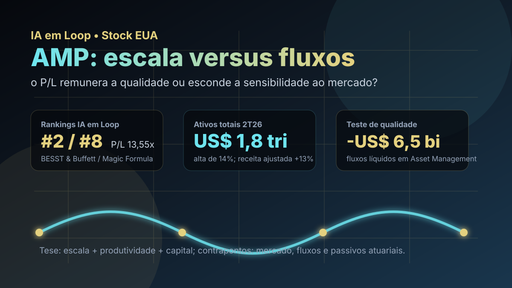

12/10: AMP, Ameriprise e o preço de uma máquina de patrimônio
A Ameriprise combina uma rede de assessores, gestão de ativos, seguros e forte retorno de capital. A pergunta central é se o P/L moderado remunera uma franquia de alta qualidade — ou apenas antecipa a sensibilidade do lucro aos mercados, aos fluxos e aos passivos antigos.

AMP reúne escala, receita recorrente e retorno de capital; o contraponto é que parte do crescimento acompanha a valorização dos mercados, enquanto a gestora ainda registra saídas líquidas.
Resposta curta: boa economia, preço razoável e três testes de qualidade
Na base IA em Loop de setembro de 2026, AMP aparece em #2 no BESST & Buffett EUA e em #8 na Magic Formula EUA. A fotografia quantitativa traz preço-base de US$ 560,56, P/L de 13,55x, P/L projetado de 10,85x, P/VP de 7,79x, ROE de 63,43% e dividend yield de 1,21%.
A combinação parece atraente, mas não deve ser resumida ao P/L. Ameriprise é, ao mesmo tempo, uma plataforma de aconselhamento financeiro, uma gestora global e uma operadora de produtos de previdência, anuidades e proteção. O lucro depende de escala e produtividade, mas também de preços de ativos, captação, retenção de assessores, juros e premissas atuariais. A tese precisa passar por três testes: crescimento orgânico dos ativos, durabilidade das margens e controle dos riscos antigos de seguros.
O que os documentos mostram
No 2T26, a Ameriprise informou US$ 1,8 trilhão em ativos sob gestão, administração e aconselhamento, alta de 14% em um ano. A receita operacional ajustada avançou 13%, para US$ 4,9 bilhões; o lucro operacional ajustado por ação subiu 22%, para US$ 11,07; e a margem operacional ajustada antes de impostos ficou em 27%. As medidas ajustadas são não GAAP e devem ser lidas junto das reconciliações da companhia.
O principal motor foi Advice & Wealth Management. O segmento alcançou US$ 1,248 trilhão em ativos de clientes, alta de 15%, receita operacional ajustada de US$ 3,246 bilhões e lucro antes de impostos de US$ 939 milhões, ambos 16% maiores. A margem permaneceu em 28,9%. O dado que exige nuance é o fluxo: entradas líquidas totais de clientes foram de US$ 3,1 bilhões, abaixo de US$ 4,3 bilhões um ano antes, embora os fluxos para contas wrap tenham crescido 28%, para US$ 6,9 bilhões.
Na Asset Management, ativos sob gestão e aconselhamento subiram 10%, para US$ 759 bilhões, e a margem ajustada avançou de 39,0% para 42,7%. Porém, o segmento ainda teve US$ 6,5 bilhões de saídas líquidas. O número melhorou 26% frente às saídas de US$ 8,7 bilhões do 2T25, mas continua negativo — um contraponto importante para uma tese baseada em escala e recorrência.
| Métrica do 2T26 | Valor | Leitura |
|---|---|---|
| Ativos totais da firma | US$ 1,8 tri; +14% | escala recorde, com contribuição de mercados e atividade dos clientes |
| Receita operacional ajustada | US$ 4,9 bi; +13% | crescimento forte, mas sensível ao nível dos ativos |
| Lucro operacional ajustado por ação | US$ 11,07; +22% | avanço acima da receita, apoiado por lucro e menor número de ações |
| Ativos de clientes em Wealth | US$ 1,248 tri; +15% | força da rede e do modelo de aconselhamento |
| Fluxos líquidos em Asset Management | -US$ 6,5 bi | melhora anual, mas crescimento orgânico ainda incompleto |
| Capital devolvido no trimestre | US$ 932 mi | 91% do lucro operacional, segundo a companhia |
Onde está o mérito econômico
O primeiro mérito é a combinação entre escala e distribuição. A rede de aconselhamento cria relacionamento com o cliente e alimenta receitas de administração, produtos financeiros e transações. No trimestre, a receita operacional ajustada por assessor atingiu US$ 1,203 milhão em doze meses, alta de 12%, enquanto a companhia adicionou 79 assessores experientes. Quando ativos, produtividade e contas com cobrança recorrente avançam juntos, o modelo pode gerar crescimento sem exigir capital físico comparável ao de uma indústria.
O segundo mérito é a alocação de capital. A Ameriprise devolveu US$ 932 milhões aos acionistas no trimestre, equivalentes a 91% do lucro operacional informado. Recompras ajudam o crescimento por ação e podem ser eficientes quando feitas abaixo do valor econômico do negócio. Ao mesmo tempo, a elevada devolução de capital exige que reservas, liquidez e capital regulatório permaneçam confortáveis.
O terceiro mérito é a diversificação. Advice & Wealth Management fornece o núcleo de crescimento; Asset Management adiciona escala global; Retirement & Protection Solutions acrescenta receitas e caixa com dinâmica diferente. Essa mistura reduz a dependência de uma única linha, mas também torna o balanço mais complexo que o de uma gestora pura.
O que ameaça a tese
O risco mais visível é confundir valorização de mercado com crescimento orgânico. A própria companhia atribuiu parte do avanço de ativos e receitas à apreciação dos mercados. Se bolsas e títulos recuarem, a base sobre a qual várias taxas são cobradas também cai; volatilidade ainda pode mudar o comportamento dos clientes e elevar resgates.
O segundo risco está nos fluxos. A divisão de gestão de ativos melhorou, mas continuou com saídas líquidas, inclusive US$ 5,1 bilhões no canal institucional. Uma franquia pode sustentar lucros por algum tempo com mercado favorável e disciplina de custos, porém a qualidade de longo prazo melhora quando desempenho, vendas e retenção convertem o crescimento de mercado em captação orgânica.
O terceiro risco é o passivo legado. A Ameriprise deixou de vender seguros próprios de long-term care há mais de duas décadas, mas mantém um bloco fechado de apólices. O 10-K explica que reservas dependem de premissas de morbidade, mortalidade, persistência, utilização de benefícios, juros e aprovações regulatórias para reajustes. É um risco de cauda: pequeno em um trimestre normal, potencialmente relevante quando a experiência diverge das hipóteses.
AMP não parece uma barganha baseada em patrimônio contábil: o P/VP é alto e o ROE é ampliado por um modelo leve em capital e por recompras. O caso faz mais sentido como franquia de geração de lucro por ação. Para o múltiplo se provar barato, é preciso ver entradas orgânicas, retenção de assessores, margens resilientes e ausência de surpresas nos passivos de seguros.
Favoráveis e desfavoráveis
Favoráveis
• Top 10 nos dois rankings locais de stocks americanas.
• US$ 1,8 trilhão em ativos totais e escala crescente.
• Wealth Management com ativos, receita e lucro em expansão.
• Margem elevada e avanço do lucro por ação.
• Retorno de capital disciplinado e redução da quantidade de ações.
Desfavoráveis
• Receita e ativos sensíveis à direção dos mercados.
• Asset Management ainda registra saídas líquidas.
• Fluxos totais de clientes desaceleraram no comparativo anual.
• P/VP elevado reduz a margem para erros de execução.
• Anuidades e long-term care adicionam risco atuarial e de juros.
Checklist para acompanhar daqui em diante
| Ponto | O que monitorar | Se piorar |
|---|---|---|
| Fluxos orgânicos | wrap flows, fluxo total de clientes e captação da gestora | ativos crescem só com o mercado, não com preferência do cliente |
| Assessores | recrutamento, retenção, produtividade e ativos transferidos | distribuição perde força e aumenta o custo de crescimento |
| Margens | margem de Wealth e Asset Management após custos de distribuição | escala não vira alavancagem operacional |
| Capital | recompras, dividendos, liquidez e capital regulatório | retorno ao acionista compete com proteção do balanço |
| Passivos antigos | revisões de premissas de LTC, anuidades e hedges | encargos extraordinários reduzem a previsibilidade |
Conclusão
A resposta para a pergunta do post é: AMP tem economia de negócio superior ao múltiplo sugerido pelo P/L, mas o desconto só é real se o crescimento vier de clientes e produtividade — não apenas da alta dos mercados. A empresa mostrou escala recorde, margens fortes e retorno de capital relevante. Em contrapartida, a gestora ainda enfrenta saídas líquidas e o balanço carrega riscos atuariais que uma análise superficial de P/L não captura.
Na régua do IA em Loop, Ameriprise é um estudo de qualidade com preço aparentemente razoável, não uma tese automática de “ação barata”. O sinal positivo seria combinar mercados normais com fluxos orgânicos melhores e margens estáveis. O sinal negativo seria manter crescimento de ativos dependente de valorização, enquanto saídas e passivos antigos consomem a vantagem do modelo.